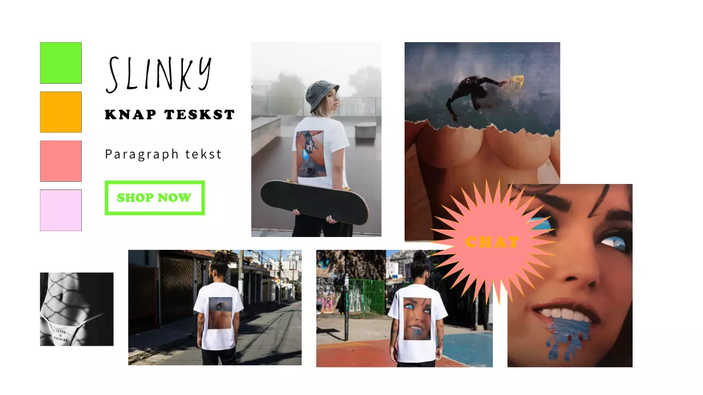

+ 03 UX
T-shirtshop

t-shirt shop
I tema 03 fik vi indblik i UX-designernes rolle på tværs af forskellige designdiscipliner samt centralt teorier og metoder vedrørende brugerforståelse. I designprocessen blev vi introduceret til metoder og værktøjer til udviklingen af en prototype for en t-shirtbutik med fokus på at skabe en bedre brugeroplevelse. Først indsnævrede vi konceptet ved at definere målgruppen og de unikke salgsargumenter, der adskiller vores produkt fra andre på markedet. Derefter gik vi ind i forskningsfasen, hvor vi udførte desk research, surveys, observationer og interviews. Disse aktiviteter hjalp os med at indsamle vigtig information og forstå brugernes behov og ønsker. Efter at have identificeret de salgsargumenter, vi ønskede at fokusere på, gik vi i gang med designprocessen. Her udarbejdede vi et moodboard, styletile og lavede skitser for at udforske forskellige designmuligheder. Til sidst udviklede vi en endelig prototype af vores t-shirtbutik ved hjælp af Adobe XD. Derefter testede vi vores prototype ved at anvende metoder som "tænk-højt"-tests og Five Act-interviews for at få feedback og indblik i forbedringer, der kunne implementeres i vores prototyper. Denne proces hjalp os med at skabe en bedre brugeroplevelse og sikre, at vores t-shirtbutik opfyldte brugernes behov og forventninger.
Koncept
I min t-shirtbutik, som var tænkt som en app, havde jeg planer om at sælge mine egne collager trykt på t-shirts og plakater. Disse collager var lavet ud fra gamle surf- og pornomagasiner og var primært rettet mod en målgruppe på 18-35 år. Min vision har længe været at oprette min egen onlinebutik med salg af disse collager og t-shirts. Et vigtigt salgsargument for mig var at fokusere på bæredygtighed i tøjproduktionen. Jeg ønskede at undersøge den mest bæredygtige metode til at producere tøj. Derudover var jeg også interesseret i at undersøge, hvordan folk handler online og hvilke betalingsmetoder de foretrækker. For at gennemføre denne undersøgelse udførte jeg desk research, udsendte surveys og gennemførte interviews. Desktop research hjalp mig med at indsamle information om bæredygtige tøjproduktionsmetoder og de nyeste tendenser inden for online shopping og betalingsmetoder. Surveys hjalp mig med at indsamle kvantitative data og opnå indsigt i forbrugernes præferencer og adfærdsmønstre. Interviews gav mig mulighed for at få kvalitative perspektiver og dybere forståelse af brugernes holdninger og behov. Disse forskningsmetoder hjalp mig med at opnå indsigt og viden, som jeg kunne bruge til at forme og forbedre min app-baserede t-shirtbutik med fokus på bæredygtighed og en god brugeroplevelse.

Research
Under min desktop research opdagede jeg, at den mest bæredygtige metode til at producere tøj var gennem upcycling, hvor eksisterende materialer genanvendes. Baseret på mine surveys fandt jeg også ud af, at der var en generel interesse i at købe mere bæredygtigt tøj. Dog viste det sig, at brugerne ikke var villige til at betale meget ekstra for en bæredygtig t-shirt. Derfor valgte jeg at producere mine t-shirts med upcyclede materialer og holde priserne på samme niveau som andre t-shirts på markedet. Gennem mine interviews fandt jeg ud af, at folk generelt foretrækker fysiske butikker på grund af muligheden for personlig kundeservice og prøverum. Derudover er folk også mere tilbøjelige til at lade sig påvirke af butiksstemningen og impulsivt købe produkter. Hvis de skulle shoppe online, foretrak de fleste at gøre det via deres mobiltelefon. Når det kom til betalingsmetoder, ønskede brugerne en hurtig og nem betalingsproces på webstedet, nem returordning og rimelige fragtomkostninger. Pop-up-vinduer med tilbud viste sig også at have en effekt på at skabe impulskøb. Baseret på disse indsigter forsøgte jeg at designe min t-shirtbutik med en balance mellem bæredygtighed og konkurrencedygtige priser. Jeg bestræbte mig på at skabe en god mobiloplevelse og tilbyde en hurtig og bekvem betalingsproces. Samtidig eksperimenterede jeg med pop-up-vinduer for at tilbyde tilbud og skabe et incitament til impulskøb.

Protype
Min prototype designede og animerede jeg i Adobe XD. For jeg gik igang med at udforme prototypen lavede jeg et moodboard for at indkredse stilarten, fonts og farver. Min målgruppe er relativ ung og derfor vil jeg gerne have en stilart inspireret af skate og surfmiljøet. Jeg valgte neonfarve til knapper og overskifter til at skabe blikfang. Billederne er streetfotos for at skabe et ungdomligt urban look. I prototypen vil jeg skabe en følelse af blive indført i et univers. Derfor jeg designede jeg en loading page som varede få ser før, brugeren kommer ind på selve sitet. Dertil jeg lavede jeg et pop-up tilbud, når brugeren kommer ind på forsiden for at skabe en stemning af impulskøb. Jeg lavede protypen i mobilformat, da jeg fandt ud gennem interviews, at mange shopper på mobilen. En chat blev også designet til at skabe en følelse af kunne få hjælp af virkelig personer ligesom i en fysisk butik. Reels blev også skabt til at præsentere produkterne hurtigt og effektivt. Til sidst lavede jeg en side med facts omkring produktionen af det upcycled materielle.

Five act test
Prototypen blev testet gennem et five act interview, hvor brugeren blev præsenteret for websitet. Først blev brugeren vist websitet i 5 sekunder, hvorefter de blev bedt om at svare på nogle overordnede spørgsmål om deres første indtryk og umiddelbare opfattelse af sitet. Herefter blev brugeren bedt om at udføre små navigationsopgaver på sitet for at vurdere brugervenligheden. Dette kunne inkludere opgaver som at finde en bestemt t-shirt, tilføje en t-shirt til indkøbskurven eller navigere til en bestemt side. Efter navigationsopgaverne blev der stillet uddybende spørgsmål til brugeren om, hvad der fungerede godt på sitet, og hvad der ikke fungerede. Dette kunne omfatte spørgsmål om brugervenlighed, design, informationsstruktur, betalingsprocessen eller andre aspekter af brugeroplevelsen. Formålet med dette five act interview var at få indblik i brugerens oplevelse af prototypen, identificere eventuelle problemer eller frustrationer og samle feedback til at forbedre designet og brugeroplevelsen. Ved at stille spørgsmål og observere brugerens handlinger kunne jeg få vigtig information til at optimere og finjustere prototypen.
Feedback
- * Generelt nem at finde rundt på
- * Funktioner / knapper virkede
- * Flot design
- * Forside skulle være nemmere at finde tilbage - blev rettet
- *småt på card -blev lavet større